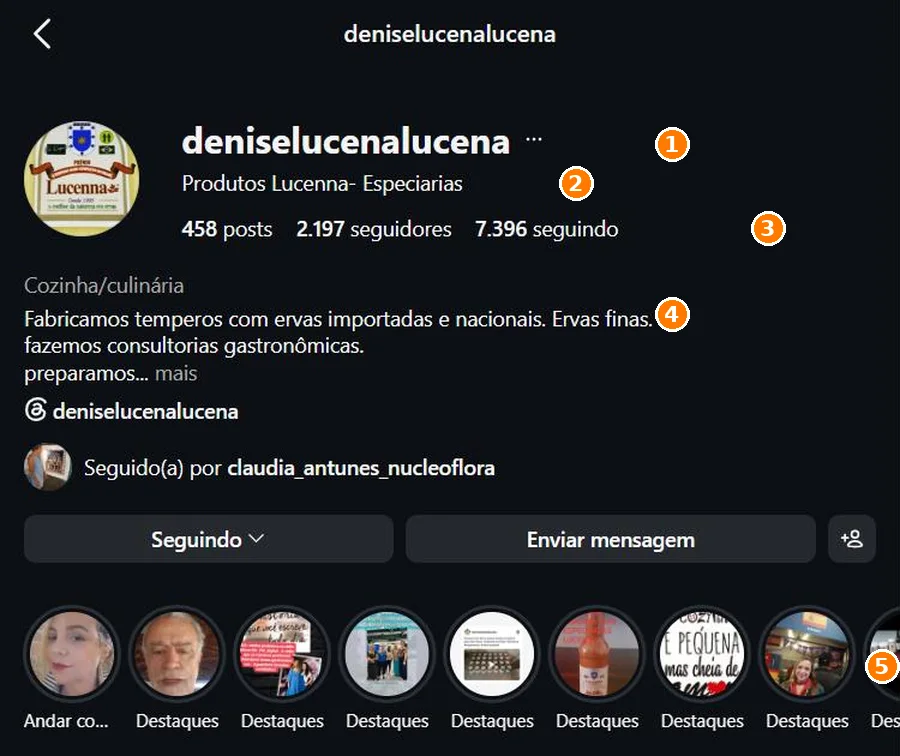
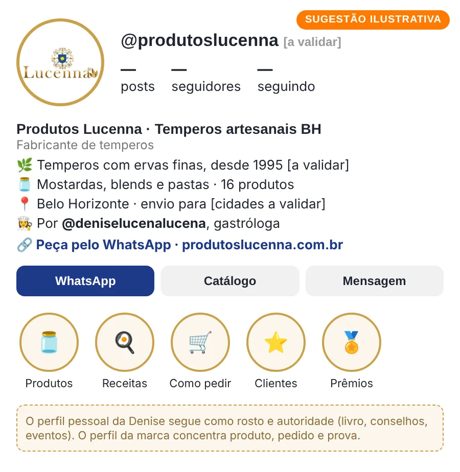
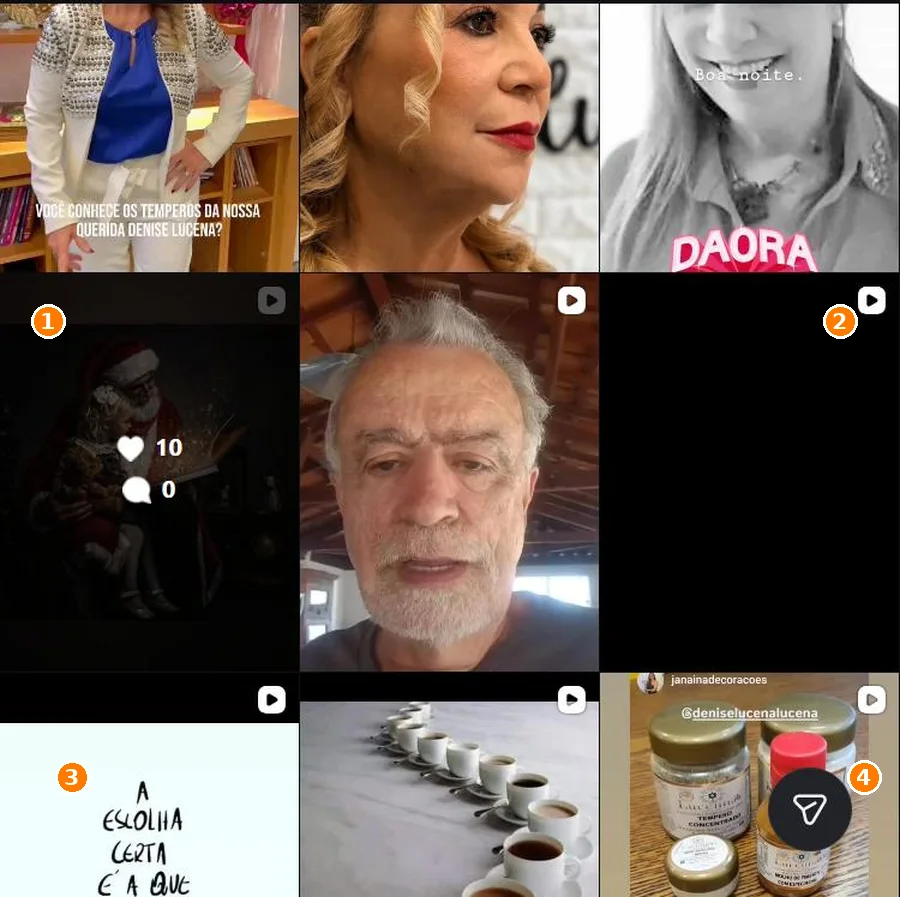
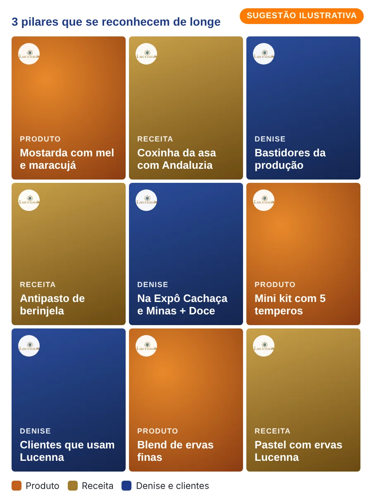
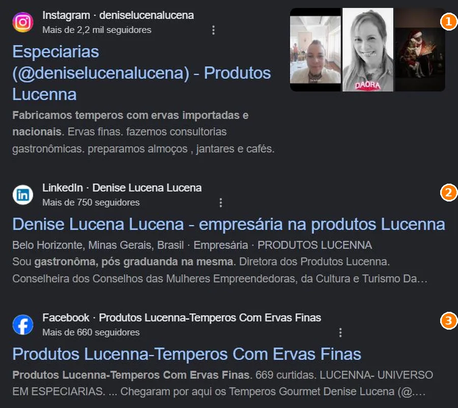
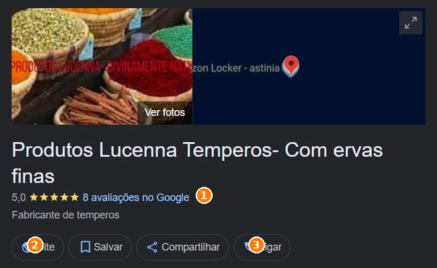
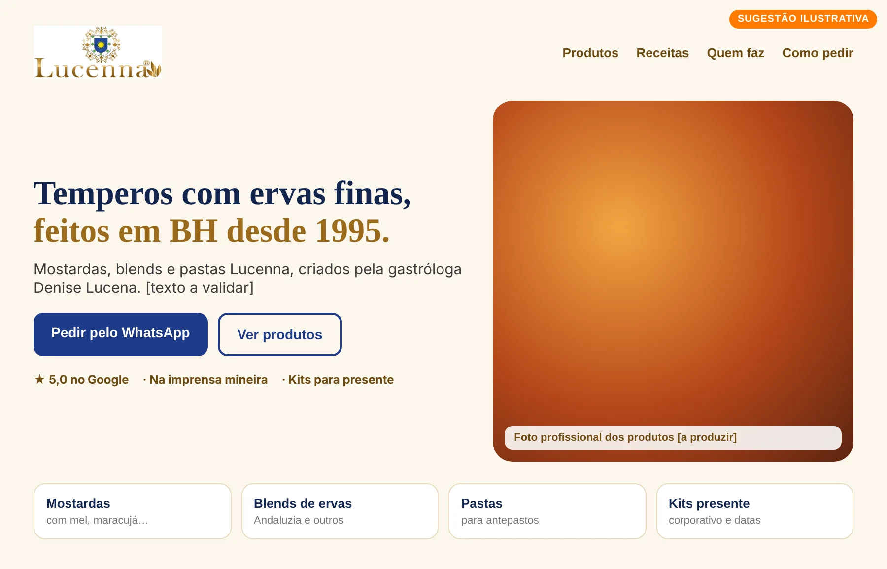

Leitura pública inicial
Olhamos, só por fora, o que os Produtos Lucenna e a Denise Lucena mostram hoje ao mercado: Instagram, Google, site, Facebook, LinkedIn e imprensa. Esta leitura reconhece o que já funciona e aponta possibilidades, para considerar conforme os seus objetivos.
Usamos o caminho do Método VOS: Ver com clareza, Ordenar o que existe e Sustentar com constância. Em cada etapa, mostramos o que já funciona e uma possibilidade de evolução.
A Lucenna tem nome, logotipo marcado com ® e uma história desde 1995. A Denise tem livro, conselhos empresariais e imprensa. Possibilidade: dar a cada uma o seu lugar, para que quem procura o tempero e quem procura a Denise encontrem o caminho certo.
458 publicações, ficha no Google, página no Facebook, LinkedIn e um site já registrado. Possibilidade: três pilares de conteúdo e um caminho único de pedido, para tudo apontar para o mesmo lugar.
Nota 5,0 no Google, matérias na imprensa mineira, clientes e influenciadoras publicando os temperos. Possibilidade: reunir essa prova em um só lugar e levá-la para perto do pedido.
Se um caminho já traz clientes, ele não precisa mudar. A Lucenna já tem produto, história, rede de relacionamento e prova. O que segue são possibilidades, para usar quando fizerem sentido para os seus objetivos.
Leitura qualitativa, baseada apenas no que é público. O Raio-X completo mede isso com dados internos e entrevista. Ainda não conversamos, então esta é uma leitura de fora: só você sabe o que já traz resultado.
Antes de mudar qualquer coisa, vale proteger o que já gera confiança.
A ficha "Produtos Lucenna Temperos - Com ervas finas" tem 5,0 com 8 avaliações, categoria "Fabricante de temperos", telefone e horário.
A descrição da ficha fala em empresa familiar, referência mineira e 16 produtos; uma matéria de 2021 cita a fundação em 1995. O logotipo traz brasão e o símbolo ®.
Matérias no Hoje em Dia (2021), na Gaia Galeria (2021) e no Jornal Espaço Horizonte (2025), além do livro BH Feminina, como coautora.
Conselhos de mulheres empreendedoras e de cultura e turismo (segundo o LinkedIn), Prepara Gastronomia no Sebrae e eventos como a Expô Cachaça e o Minas + Doce.
Depoimentos em vídeo, clientes publicando receitas com os temperos e uma influenciadora mostrando os "Temperos Gourmet Denise Lucena".
Mini kits com 5 temperos, já enviados para São Paulo. Uma linha natural para datas comemorativas e brindes.
À esquerda, como está hoje (print real). À direita, uma possibilidade ilustrativa, na identidade da própria Lucenna. É um exemplo de direção, não a arte final, e depende dos seus objetivos.
O nome do perfil é "Produtos Lucenna - Especiarias", com o endereço @deniselucenalucena. Ele carrega as duas histórias ao mesmo tempo. Se o objetivo for vender mais temperos, uma possibilidade é um perfil da marca, mantendo o pessoal como rosto e autoridade.


A grade mistura a Denise, amigos, mensagens, datas comemorativas e, entre eles, os produtos. Isso aproxima. Se o objetivo for vender temperos, três pilares fazem o produto ser reconhecido de longe.


Na busca "temperos lucenna denise lucena", aparecem o Instagram, o LinkedIn da Denise e a página do Facebook, cada um com um nome um pouco diferente. É um bom sinal de presença; o próximo passo pode ser fazer todos dizerem a mesma frase.

Instagram aparece em primeiro, com a bio
LinkedIn com o cargo de diretora e os conselhos
Facebook "Produtos Lucenna - Temperos com Ervas Finas"
Imprensa de 2021 e 2025 nos resultados
A ficha é da marca, com categoria correta e avaliações máximas. Ao clicar em "Site", o domínio produtoslucenna.com.br abre uma página "em construção". O domínio já é um ativo e pode virar a casa da marca.

Se o objetivo for receber pedidos de quem chega pelo Google, por indicação ou pelo livro, uma página com os produtos, a história e o WhatsApp já resolve boa parte do caminho. Não precisa começar como loja completa.

Consultamos Instagram, Google, site, Facebook, LinkedIn e imprensa. Registramos também o que não encontramos, porque ausência de prova também é informação.
| Item | O que encontramos | Fonte | Situação |
|---|---|---|---|
| @deniselucenalucena, nome "Produtos Lucenna - Especiarias", categoria Cozinha/culinária, 458 posts, 2.197 seguidores. Bio com temperos, consultoria gastronômica e eventos. | Print do Instagram (09/11/2026) | Ativo | |
| Perfil exclusivo da marca | Não localizamos um perfil de Instagram só da Lucenna. | Busca no Instagram e no Google | Possibilidade |
| Google (ficha) | "Produtos Lucenna Temperos - Com ervas finas": 5,0 com 8 avaliações, fabricante de temperos, telefone, horário e botão de site. | Print do Google (09/11/2026) | Ponto forte |
| Site | produtoslucenna.com.br com logotipo e aviso de página em construção. | Navegador (09/11/2026) | Possibilidade |
| Página "Produtos Lucenna - Temperos com Ervas Finas", 669 curtidas e mais de 660 seguidores. | Resultado do Google | Ativo | |
| Denise Lucena: empresária, gastróloga, diretora dos Produtos Lucenna e conselheira em conselhos de mulheres empreendedoras e de cultura e turismo; 750+ seguidores. | Resultado do Google | Ponto forte | |
| Imprensa | Hoje em Dia (mai/2021), Gaia Galeria (abr/2021, cita a fundação em 1995) e Jornal Espaço Horizonte (jul/2025, sobre temperos autorais). | Resultados do Google | Ponto forte |
| Livro | Coautora de BH Feminina: vozes que inspiram, mulheres que transformam (Literíssima), com lançamento em 3 de outubro no Grande Hotel Ronaldo Fraga. | Convite do lançamento | Ponto forte |
| Clientes e parceiros | Influenciadora mostrando os temperos, clientes publicando receitas, depoimento em vídeo e presença na Expô Cachaça e no Minas + Doce. | Ponto forte | |
| Destaques do Instagram | Muitos destaques, quase todos com o título "Destaques". | Print do Instagram | Possibilidade |
| Catálogo e preços | Não localizamos catálogo público com todos os produtos; há posts pontuais (mini kits, mostardas). | Instagram, Google | Conferir |
| Reclame Aqui e marketplaces | Não localizamos página no Reclame Aqui nem loja em marketplace nas buscas feitas. | Buscas públicas | Não localizado |
No celular, deslize a tabela para o lado.
Se os caminhos de hoje já trazem clientes, eles seguem. Se o objetivo for ampliar, seja com anúncios, kits corporativos ou novos pontos de venda, estas três camadas ajudam cada esforço a render.
Um exemplo de sequência, a ajustar depois de conversarmos sobre os seus objetivos. O que já funciona entra como base e é preservado.
Esta leitura é um recorte do que o Raio-X mostra por dentro. Se fizer sentido, a gente conversa sobre os seus objetivos e sobre o que vale, ou não, mudar.
Conversar com a Yasmin Sem compromisso · resposta pelo WhatsApp